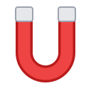

ruTorrent Quick Add — SettingsDestination buttons determine the label and remote download directory. Changes are saved locally in Chrome.
Security: server passwords are stored in Chrome extension local storage, not encrypted by this extension. Use HTTPS. Exported settings contain passwords.